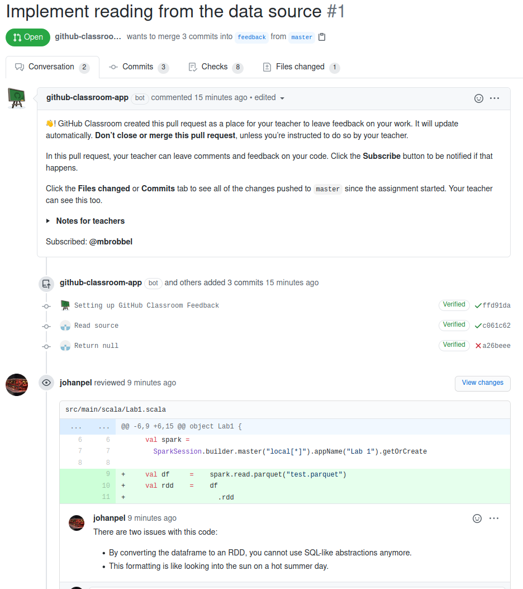
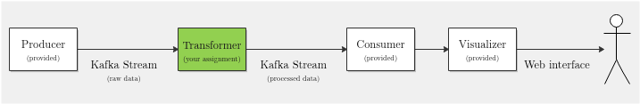

Introduction
Sea levels are rising. If this continues, areas that are now land will become part of the oceans. Potential inhabitants must relocate or live on the oceans, just like Kevin Kostner and Jeanne Tripplehorn in Waterworld (1995). In this lab, we want to answer the question of what a good relocation plan would be for inhabitants of flooded areas given a specific amount of sea level rise.
It turns out that we can achieve all the learning objectives of the course by attempting to answer this question and some variants on it. To this end, we limit ourselves to a context where we can only use the OpenStreetMap and ALOS Global Digital Surface Model datasets, together with various industry-standard frameworks and tools, such as the Scala programming language to write our programs, Apache Spark to process batches of data, Apache Kafka to process streaming data, and the Amazon Web Services (AWS) to scale out our solutions in terms of performance (but also cost!). In this context, we will face several challenges that are similar to what you could find in the industry - and we will learn to deal with them efficiently.
Using this manual
You can browse through the manual by using the table of contents on the left. To
go to the next page, you can also click on the >'s on the right of this page.
This manual is generated by mdBook, and the sources can be found on GitHub.
Feel free to kindly report issues and/or make pull requests to suggest or
implement improvements! If there are any major changes, we will notify everyone
on Brightspace and Discord.
Disclaimer
The priority of this lab is to allow you to achieve all learning objectives of the course. This becomes less boring and more effective if we do not choose the assignments to be completely abstract and detached from reality (e.g. when we ask you to join data set A with fields W and X to dataset B with fields Y and Z, without any further context). The priority of this lab is not to teach you about earth sciences or policymaking. The contents of this lab manual may include oversimplifications of these subjects in order to allow us to achieve the learning goals related to distributed computing on big data more effectively.
Goal of this Lab
The goal of this lab is to achieve the Course Learning Objectives, that we repeat here.
By the end of this course, you will be able to:
| ID | Description |
|---|---|
| L1 | Use basic big data processing systems like Hadoop and MapReduce. |
| L2 | Implement parallel algorithms using the in-memory Spark framework, and streaming using Kafka. |
| L3 | Use libraries to simplify implementing more complex algorithms. |
| L4 | Identify the relevant characteristics of a given computational platform to solve big data problems. |
| L5 | Utilize knowledge of hardware and software tools to produce an efficient implementation of the application. |
We will achieve these learning objectives by performing the following tasks, spread out over three labs.
- You will work with Apache Spark, the MapReduce programming paradigm, and the Scala programming language, which is widely used in this domain.
- You will approach a big data problem analytically and practically.
- You will work with cloud-based systems.
- You will deal with existing infrastructures for big data.
- You will modify an existing application to operate in a streaming data context.
Code repositories
For this lab, you will write a lot of code. All (incremental additions to) the code for the lab assignments are kept in a private git repository that is hosted on GitHub, inside the GitHub Classroom used for this course. (Please don't register yet until you've read the full introduction.) This is the only way to turn in code, any other channels, such as e-mail, are rejected.
If you do not know how to use git, you must familiarize yourself with it first. This is an essential skill for your future career. We consider this a prerequisite to the course. There are many tutorials online, and sometimes cheatsheets come in handy when you start to use git. There are also GUIs that may be useful to those that don't like working on the command-line.
The snapshot of the code in your assignment repository on the master branch,
at the moment the deadline expires, will be your submission. Make sure to make
your last commit before the deadline!
We recommend students to work on branches, and make pull requests to their
master branch once the code they are trying to implement is complete. These
pull requests can be reviewed by their teammates or by the TAs to provide early
feedback.
The feedback mechanism is also explicitly available in your GitHut Classroom
repository as a pull request that is made when your repository is first
initialized. To trigger the TA's to start reviewing your master branch, you can
also use this pull request (PRs). It will be named Feedback #1 and can be
found by clicking Pull requests, then the Feedback #1 PR. You can then ask
for a review from the TAs; ping TAs on Discord: Yongding Tian, Vaatbak or contact
on GitHub twoentartian, ChristiaanBoe.
(create a new Feedback branch if it does not exist).
Also see the figure below:

Here is an example of feedback that we can provide based on the Feedback #1 PR.
Note that you can also request reviews on any other PR if you want.

Because we have limited capacity, we do ask you to request a review only when you've made either very significant contributions, or preferably when you think you have completed the assignment. TA priority will be based on groups ordered by number of review requests performed (e.g. groups who have had only one request will go before groups who have had several reviews).
Groups
You may work alone or in groups of at most two students. In the case of groups, it is recommended that both students attempt to solve the problem before converging to a single implementation.
In any case, even if you work alone, you must register your group in both GitHub Classroom and Brightspace. We know this is inconvenient, but there is no integration between Classroom and Brightspace yet. We use Brightspace for grade administration, and GitHub Classroom for the code.
All groups in Classroom must be named after their respective name in Brightspace, after the following example:
2425-group-01
That is, 2425<dash>group<dash><two digit group number with leading zero>. If you do not
adhere to this group name format, some of our tools may not work, and we cannot
grade you.
The invite links for the GitHub Classrooms for the 3 assignments are as follows:
AWS
Lab 2 requires a significant amount of computations performed on a lot of data, so we need a large compute and storage infrastructure to run the program. In this lab, we will use AWS to facilitate this.
We have gotten AWS credits for the whole course via Cloud4Research, details will follow. (Disregard anything you heard about the GitHub student developer pack, it is no longer possible to get AWS credits that way.)
Early Feedback and Grading
Grading depends on the specific lab exercise and is explained in the associated parts of the guide, but is generally based on:
- Your code
- Your report
Additionally, there is a potential oral exam based on the grade of a quiz at the end of the course (more about this at the end of this section).
All your code must be incrementally updated on GitHub Classroom. The reports are
also stored in your repository as the README.md. At some point, the deadline
will expire, and you will not be able to update your code and report. As
explained previously, the code on the master branch will be graded.
We strive for a course where it is clear to you how you are doing before handing in your project for grading, as well as making it clear how you are graded. In this way, we do not have to rely on resits in our quest to achieve the learning objectives, but will provide feedback much earlier, before handing in your assignment for grading. Thus, this lab knows no resit (this is also only required by the examination rules for written exams).
There are two mechanisms by which you can obtain early feedback about your work.
a. Each lab will have an associated Rubric, which is like a table with indicators for specific grades in specific parts of the assignment, that are related to the learning objectives of this course.
b. You can ask the TAs during the lab for feedback on your code or your report, after you have looked at the rubric and/or if you have specific questions.
Therefore, by spending the required amount of time to learn, using the Rubric to reflect on your own work, and by asking questions during the lab, it is incredibly unlikely that you will fail this course. At the same time, do remember that programming experience is a prerequisite for this course. We unfortunately do not have time to teach you how to program.
Regarding the oral exam, there is a possibility that some group members do not contribute to achieving the lab goals, in turn causing them to not achieve the learning objectives (sometimes called freeloaders). Because the TU Delft strives to deliver Masters of Science of the highest quality, we must ensure that all students that pass this course have achieved the learning objectives. To this end, in one of the final weeks of the course, a multiple-choice quiz will take place that is incredibly easy to pass if you achieved all learning goals through the lab. If you do not pass (there will be a specific threshold), you are invited to an oral examination where we will discuss the implementation of the code. Based on this, we will determine a grade multiplier between zero and one. Thus, make sure you understand every detail of the code your group may produce. The quiz will be performed on Brightspace during a lecture slot. An example of quiz questions is found here.
Regarding plagiarism
All rules of the TU Delft and master program regarding plagiarism apply. It's fine to copy little pieces of code that you understand from e.g. StackOverflow, to build up your own desired functionality around it. It is definitely not allowed to copy portions or the whole solution from other students. If you did that, you wouldn't be achieving the learning objectives!
Additionally, DO NOT make your code publicly available by e.g. forking or copying your repository publicly. The examination rules of the Delft University of Technology explain that even though perhaps you wrote the code yourself, making it publicly available makes you a potential accomplice to plagiarism and you may receive the same punishment as whoever copied it from you. We repeat: DO NOT make your code publicly available.
Getting Started
In this chapter, we will cover some of the concepts and technologies that are used during the course.
Example repository
The examples in this chapter are accompanied by some code. You can download this code from its online repository. Unless stated otherwise, we usually run commands in the root folder of this repository. To get this code and go into the root folder, you could run:
git clone https://github.com/abs-tudelft/sbd-example.git
cd sbd-example
For command-line commands, we're going to assume we're using Linux with Bash. If you're on Windows or Mac, you have to figure out how to do stuff yourself, or perhaps use a virtual machine or container.
This chapter will continue to introduce the following topics:
Docker
An application that allows the user to package and run software (like Spark and Kafka and the programs we write for them) in an isolated environment: a container.
Scala
A programming language that runs on the Java Virtual Machine (JVM). This is our (mandatory!) language of choice during the lab assignments. We will use it to program for both Apache Spark and Apache Kafka.
Apache Spark
A framework for processing large amounts of data on multiple machines in a robust way. We will build our application for labs 1 and 2 using Spark.
Amazon Web Services
AWS, which provide theoretically unlimited compute infrastructure, allowing us to process a large dataset in lab 2.
Apache Kafka
A framework for building so-called data pipelines, in which potentially many producers and consumers process real-time, streaming data. In lab 3, we will take the application from labs 1 and 2 and modify it to process data in real-time, using Kafka.
OpenStreetMap
An open source project capturing geographic data from all over the world. The assignments of this lab are based on (parts of) this data set.
ALOS Global Digital Surface Model
An open data set with elevation levels of the entire planet (except oceans).
Docker
According to the Docker Documentation
Docker is a platform for developers and sysadmins to develop, deploy, and run applications with containers. The use of Linux containers to deploy applications is called containerization. Containers are not new, but their use for easily deploying applications is. Containerization is increasingly popular because containers are:
Flexible
- Even the most complex applications can be containerized.
Lightweight
- Containers leverage and share the host kernel.
Interchangeable
- You can deploy updates and upgrades on-the-fly.
Portable
- You can build locally, deploy to the cloud, and run anywhere.
Scalable
- You can increase and automatically distribute container replicas.
Stackable
- You can stack services vertically and on-the-fly.
For this course, we use Docker primarily to ensure every student is using the exact same platform for their applications, and to avoid certain platform-specific issues and peculiarities.
You are not required to use Docker for this lab when you feel comfortable setting up the required tools on your own system.
A basic understanding of some Docker concepts helps in getting started with this course. Part 1: Orientation and setup of the Get Started Guide covers the basic Docker concepts used in this course.
Before trying the lab assignments and tutorials in the next sections, make sure you Install Docker (stable) and test your installation by running the simple Hello World image.
docker run hello-world
Setting up Spark in Docker
In order to run Spark in a container, a Dockerfile is provided in the root of
all repositories we will use in this lab, including the repository for the
Getting Started guide. The Dockerfile can be used to build images for
spark-submit to run your Spark application, spark-shell to run a Spark
interactive shell, and the Spark history server to view event logs from
application runs. You need to build these images before you get started. The
Dockerfiles we provide assume that you run Docker from the folder at which they
are located. Don't move them around! They will stop working.
To build a docker image from the Dockerfile, we use docker build:
docker build --target <target> -t <tag> .
Here <target> selects the target from the Dockerfile, <tag> sets the tag
for the resulting image, and the . sets the build context to the current
working directory.
We use docker to pull and build the images we need to use Spark and SBT.
-
sbtdocker pull hseeberger/scala-sbt:11.0.12_1.5.5_2.12.14 docker tag hseeberger/scala-sbt:11.0.12_1.5.5_2.12.14 sbt -
spark-shelldocker build --target spark-shell -t spark-shell . -
spark-submitdocker build --target spark-submit -t spark-submit . -
spark-history-serverdocker build --target spark-history-server -t spark-history-server .
You could then run the following commands from the Spark application root
(the folder containing the build.sbt file). Please make sure to use the
provided template project.
The commands below are provided as a reference, and they will be used throughout
the rest of this guide. You do not have to run them now, because some of them
require additional parameters (e.g. spark-submit) that we will provide later
in the manual.
-
To run SBT to package or test your application (
sbt <command>)docker run -it --rm -v "`pwd`":/root sbt sbt -
To start a Spark shell (
spark-shell)docker run -it --rm -v "`pwd`":/io spark-shell -
To run your Spark application (
spark-submit) (fill in the class name of your application and the name of your project!)docker run -it --rm -v "`pwd`":/io -v "`pwd`"/spark-events:/spark-events \ spark-submit --class <YOUR_CLASSNAME> \ target/scala-2.12/<YOUR_PROJECT_NAME>_2.12-1.0.jar -
To spawn the history server to view event logs, accessible at localhost:18080
docker run -it --rm -v "`pwd`"/spark-events:/spark-events \ -p 18080:18080 spark-history-server
The further we get in the manual, we will generally not mention the full Docker
commands this explicitly again, so know that if we mention e.g. spark-shell,
you should run the corresponding docker run command listed above. You can
create scripts or aliases for your favorite shell to avoid having to type a lot.
Scala
Apache Spark, our big data framework of choice for this lab, is implemented in Scala, a compiled language on the JVM that supports a mix between functional and object-oriented programming. It is compatible with Java libraries. Some reasons why Spark was written in Scala are:
-
Compiling to the JVM makes the codebase extremely portable and deploying applications as easy as sending the Java bytecode (typically packaged in a Java ARchive format, or JAR). This simplifies deploying to cloud provider big data platforms as we don't need specific knowledge of the operating system, or even the underlying architecture.
-
Compared to Java, Scala has some advantages in supporting more complex types, type inference, and anonymous functions (Since Java 8, Java also supports anonymous functions, or lambda expression, but this version wasn't released at the time of Spark's initial release.). Matei Zaharia, Apache Spark's original author, has said the following about why Spark was implemented in Scala in a Reddit AMA:
At the time we started, I really wanted a PL that supports a language-integrated interface (where people write functions inline, etc), because I thought that was the way people would want to program these applications after seeing research systems that had it (specifically Microsoft's DryadLINQ). However, I also wanted to be on the JVM in order to easily interact with the Hadoop filesystem and data formats for that. Scala was the only somewhat popular JVM language then that offered this kind of functional syntax and was also statically typed (letting us have some control over performance), so we chose that. Today there might be an argument to make the first version of the API in Java with Java 8, but we also benefitted from other aspects of Scala in Spark, like type inference, pattern matching, actor libraries, etc.
Apache Spark provides interfaces to Scala, R, Java and Python, but we will be using Scala to program in this lab. An introduction to Scala can be found on the Scala language site. You can have a brief look at it, but you can also pick up topics as you go through the lab.
Apache Spark
Apache Spark provides a programming model for a resilient distributed shared memory model. To elaborate on this, Spark allows you to program against a unified view of memory (i.e. RDD or DataFrame), while the processing happens distributed over multiple nodes/machines/computers/servers being able to compensate for failures of these nodes.
This allows us to define a computation and scale this over multiple machines without having to think about communication, distribution of data, and potential failures of nodes. This advantage comes at a cost: All applications have to comply with Spark's (restricted) programming model.
The programming model Spark exposes is based around the MapReduce paradigm. This is an important consideration when you would consider using Spark, does my problem fit into this paradigm?
Modern Spark exposes two APIs around this programming model:
- Resilient Distributed Datasets
- Spark SQL Dataframe/Datasets
In the rest of this section, we will demonstrate a simple application with implementations using both APIs.
Resilient Distributed Datasets

Illustration of RDD abstraction of an RDD with a tuple of characters and integers as elements.
RDDs are the original data abstraction used in Spark. Conceptually one can think of these as a large, unordered list of Java/Scala/Python objects, let's call these objects elements. This list of elements is divided in partitions (which may still contain multiple elements), which can reside on different machines. One can operate on these elements with a number of operations, which can be subdivided in wide and narrow dependencies, see the table below. An illustration of the RDD abstraction can be seen in the figure above.
RDDs are immutable, which means that the elements cannot be altered, without creating a new RDD. Furthermore, the application of transformations (wide or narrow) is lazy evaluation, meaning that the actual computation will be delayed until results are requested (an action in Spark terminology). When applying transformations, these will form a directed acyclic graph (DAG), that instructs workers what operations to perform, on which elements to find a specific result. This can be seen in the figure above as the arrows between elements.
| Narrow Dependency | Wide Dependency |
|---|---|
map | coGroup |
mapValues | flatMap |
flatMap | groupByKey |
filter | reduceByKey |
mapPartitions | combineByKey |
mapPartitionsWithIndex | distinct |
join with sorted keys | join |
intersection | |
repartition | |
coalesce | |
sort |
List of wide and narrow dependencies for (pair) RDD operations
Now that you have an idea of what the abstraction is about, let's demonstrate some example code with the Spark shell.
If you want to paste pieces of code into the spark shell from this guide, it
might be useful to copy from the github version, and use the :paste command in
the spark shell to paste the code. Hit ctrl+D to stop pasting.
We can start the shell using Docker:
docker run -it --rm -v "`pwd`":/io spark-shell
We should now get the following output:
WARNING: An illegal reflective access operation has occurred
WARNING: Illegal reflective access by org.apache.spark.unsafe.Platform (file:/spark/jars/spark-unsafe_2.12-3.1.2.jar) to constructor java.nio.DirectByteBuffer(long,int)
WARNING: Please consider reporting this to the maintainers of org.apache.spark.unsafe.Platform
WARNING: Use --illegal-access=warn to enable warnings of further illegal reflective access operations
WARNING: All illegal access operations will be denied in a future release
2021-09-06 08:36:27,947 WARN util.NativeCodeLoader: Unable to load native-hadoop library for your platform... using builtin-java classes where applicable
Setting default log level to "WARN".
To adjust logging level use sc.setLogLevel(newLevel). For SparkR, use setLogLevel(newLevel).
Spark context Web UI available at http://a4a64e0fea2c:4040
Spark context available as 'sc' (master = local[*], app id = local-1630917390997).
Spark session available as 'spark'.
Welcome to
____ __
/ __/__ ___ _____/ /__
_\ \/ _ \/ _ `/ __/ '_/
/___/ .__/\_,_/_/ /_/\_\ version 3.1.2
/_/
Using Scala version 2.12.10 (OpenJDK 64-Bit Server VM, Java 11.0.12)
Type in expressions to have them evaluated.
Type :help for more information.
scala>
When opening a Spark Shell, by default, you get two objects.
- A
SparkSessionnamedspark. - A
SparkContextnamedsc.
These objects contains the configuration of your session, i.e. whether you are running in local or cluster mode, the name of your application, the logging level etc.
We can get some (sometimes slightly arcane) information about Scala objects that exist in the scope of the shell, e.g.:
scala> spark
res0: org.apache.spark.sql.SparkSession = org.apache.spark.sql.SparkSession@747e0a31
Now, let's first create some sample data that we can demonstrate the RDD API around. Here we create an infinite list of repeating characters from 'a' tot 'z'.
scala> val charsOnce = ('a' to 'z').toStream
charsOnce: scala.collection.immutable.Stream[Char] = Stream(a, ?)
scala> val chars: Stream[Char] = charsOnce #::: chars
chars: Stream[Char] = Stream(a, ?)
Now we build a collection with the first 200000 integers, zipped with the character stream. We display the first five results.
scala> val rdd = sc.parallelize(chars.zip(1 to 200000), numSlices=20)
rdd: org.apache.spark.rdd.RDD[(Char, Int)] = ParallelCollectionRDD[0] at parallelize at <console>:26
scala> rdd.take(5)
res2: Array[(Char, Int)] = Array((a,1), (b,2), (c,3), (d,4), (e,5))
Let's dissect what just happened. We created a Scala object that is a list of
tuples of Chars and Ints in the statement (chars).zip(1 to 200000). With
sc.parallelize we are transforming a Scala sequence into an RDD. This allows
us to enter Spark's programming model. With the optional parameter numSlices
we indicate in how many partitions we want to subdivide the sequence.
Let's apply some (lazily evaluated) transformations to this RDD.
scala> val mappedRDD = rdd.map({case (chr, num) => (chr, num+1)})
mappedRDD: org.apache.spark.rdd.RDD[(Char, Int)] = MapPartitionsRDD[1] at map at <console>:25
We apply a map to the RDD, applying a function to all the elements in the
RDD. The function we apply pattern matches over the elements as being a tuple
of (Char, Int), and add one to the integer. Scala's syntax can be a bit
foreign, so if this is confusing, spend some time looking at tutorials and
messing around in the Scala interpreter.
You might have noticed that the transformation completed awfully fast. This is Spark's lazy evaluation in action. No computation will be performed until an action is applied.
scala> val reducedRDD = rdd.reduceByKey(_ + _)
reducedRDD: org.apache.spark.rdd.RDD[(Char, Int)] = ShuffledRDD[2] at reduceByKey at <console>:25
Now we apply a reduceByKey operation, grouping all of the identical keys together and
merging the results with the specified function, in this case the + operator.
Now we will perform an action, which will trigger the computation of the transformations on the data. We will use the collect action, which means to gather all the results to the master, going out of the Spark programming model, back to a Scala sequence. How many elements do you expect there to be in this sequence after the previous transformations?
scala> reducedRDD.collect
res3: Array[(Char, Int)] = Array((d,769300000), (x,769253844), (e,769307693),
(y,769261536), (z,769269228), (f,769315386), (g,769323079), (h,769330772),
(i,769138464), (j,769146156), (k,769153848), (l,769161540), (m,769169232),
(n,769176924), (o,769184616), (p,769192308), (q,769200000), (r,769207692),
(s,769215384), (t,769223076), (a,769276921), (u,769230768), (b,769284614),
(v,769238460), (w,769246152), (c,769292307))
Typically, we don't build the data first, but we actually load it from a
database or file system. Say we have some data in (multiple) files in a
specific format. As an example consider sensordata.csv (in the example
folder). We can load it as follows:
// sc.textFile can take multiple files as argument!
scala> val raw_data = sc.textFile("sensordata.csv")
raw_data: org.apache.spark.rdd.RDD[String] = sensordata.csv MapPartitionsRDD[1] at textFile at <console>:24
And observe some of its contents:
scala> raw_data.take(10).foreach(println)
COHUTTA,3/10/14:1:01,10.27,1.73,881,1.56,85,1.94
COHUTTA,3/10/14:1:02,9.67,1.731,882,0.52,87,1.79
COHUTTA,3/10/14:1:03,10.47,1.732,882,1.7,92,0.66
COHUTTA,3/10/14:1:05,9.56,1.734,883,1.35,99,0.68
COHUTTA,3/10/14:1:06,9.74,1.736,884,1.27,92,0.73
COHUTTA,3/10/14:1:08,10.44,1.737,885,1.34,93,1.54
COHUTTA,3/10/14:1:09,9.83,1.738,885,0.06,76,1.44
COHUTTA,3/10/14:1:11,10.49,1.739,886,1.51,81,1.83
COHUTTA,3/10/14:1:12,9.79,1.739,886,1.74,82,1.91
COHUTTA,3/10/14:1:13,10.02,1.739,886,1.24,86,1.79
We can process this data to filter only measurements on 3/10/14:1:01.
scala> val filterRDD = raw_data.map(_.split(",")).filter(x => x(1) == "3/10/14:1:01")
filterRDD: org.apache.spark.rdd.RDD[Array[String]] = MapPartitionsRDD[11] at filter at <console>:25
And look at the output:
scala> filterRDD.foreach(a => println(a.mkString(" ")))
COHUTTA 3/10/14:1:01 10.27 1.73 881 1.56 85 1.94
LAGNAPPE 3/10/14:1:01 9.59 1.602 777 0.09 88 1.78
NANTAHALLA 3/10/14:1:01 10.47 1.712 778 1.96 76 0.78
CHER 3/10/14:1:01 10.17 1.653 777 1.89 96 1.57
THERMALITO 3/10/14:1:01 10.24 1.75 777 1.25 80 0.89
ANDOUILLE 3/10/14:1:01 10.26 1.048 777 1.88 94 1.66
BUTTE 3/10/14:1:01 10.12 1.379 777 1.58 83 0.67
CARGO 3/10/14:1:01 9.93 1.903 778 0.55 76 1.44
MOJO 3/10/14:1:01 10.47 1.828 967 0.36 77 1.75
BBKING 3/10/14:1:01 10.03 0.839 967 1.17 80 1.28
You might have noticed that this is a bit tedious to work with, as we have to convert everything to Scala objects, and aggregations rely on having a pair RDD, which is fine when we have a single key. For more complex aggregations, this becomes a bit tedious to juggle with.
Dataframe and Dataset
Our previous example is quite a typical use case for Spark. We have a big data store of some structured (tabular) format (be it csv, JSON, parquet, or something else) that we would like to analyse, typically in some SQL-like fashion. Manually applying operations to rows like this is both labour intensive, and inefficient, as we have knowledge of the 'schema' of data. This is where DataFrames originate from. Spark has an optimized SQL query engine that can optimize the compute path as well as provide a more efficient representation of the rows when given a schema. From the Spark SQL, DataFrames and Datasets Guide:
Spark SQL is a Spark module for structured data processing. Unlike the basic Spark RDD API, the interfaces provided by Spark SQL provide Spark with more information about the structure of both the data and the computation being performed. Internally, Spark SQL uses this extra information to perform extra optimizations. There are several ways to interact with Spark SQL including SQL and the Dataset API. When computing a result the same execution engine is used, independent of which API/language you are using to express the computation. This unification means that developers can easily switch back and forth between different APIs based on which provides the most natural way to express a given transformation.
Under the hood, these are still immutable distributed collections of data (with the same compute graph semantics, only now Spark can apply extra optimizations because of the (structured) format.
Let's do the same analysis as last time using this API. First we will define a schema. Let's take a look at a single row of the csv:
COHUTTA,3/10/14:1:01,10.27,1.73,881,1.56,85,1.94
So first a string field, a date, a timestamp, and some numeric information. We can thus define the schema as such:
val schema =
StructType(
Array(
StructField("sensorname", StringType, nullable=false),
StructField("timestamp", TimestampType, nullable=false),
StructField("numA", DoubleType, nullable=false),
StructField("numB", DoubleType, nullable=false),
StructField("numC", LongType, nullable=false),
StructField("numD", DoubleType, nullable=false),
StructField("numE", LongType, nullable=false),
StructField("numF", DoubleType, nullable=false)
)
)
If we import types first, and then enter this in our interactive shell we get the following:
:paste
// Entering paste mode (ctrl-D to finish)
import org.apache.spark.sql.types._
val schema =
StructType(
Array(
StructField("sensorname", StringType, nullable=false),
StructField("timestamp", TimestampType, nullable=false),
StructField("numA", DoubleType, nullable=false),
StructField("numB", DoubleType, nullable=false),
StructField("numC", LongType, nullable=false),
StructField("numD", DoubleType, nullable=false),
StructField("numE", LongType, nullable=false),
StructField("numF", DoubleType, nullable=false)
)
)
// Exiting paste mode, now interpreting.
import org.apache.spark.sql.types._
schema: org.apache.spark.sql.types.StructType =
StructType(StructField(sensorname,StringType,false),
StructField(timestamp,TimestampType,false), StructField(numA,DoubleType,false),
StructField(numB,DoubleType,false), StructField(numC,LongType,false),
StructField(numD,DoubleType,false), StructField(numE,LongType,false),
StructField(numF,DoubleType,false))
An overview of the different Spark SQL types
can be found online. For the timestamp field we need to specify the format
according to the Javadate format
—in our case MM/dd/yy:hh:mm. Tying this all together we can build a Dataframe
like so.
:paste
// Entering paste mode (ctrl-D to finish)
val df = spark.read
.schema(schema)
.option("timestampFormat", "M/d/yy:H:mm")
.csv("./sensordata.csv")
// Exiting paste mode, now interpreting.
df: org.apache.spark.sql.DataFrame =
[sensorname: string, timestamp: date ... 6 more fields]
scala> df.printSchema
root
|-- sensorname: string (nullable = true)
|-- timestamp: timestamp (nullable = true)
|-- numA: double (nullable = true)
|-- numB: double (nullable = true)
|-- numC: long (nullable = true)
|-- numD: double (nullable = true)
|-- numE: long (nullable = true)
|-- numF: double (nullable = true
scala> df.take(5).foreach(println)
[COHUTTA,2014-03-10 01:01:00.0,10.27,1.73,881,1.56,85,1.94]
[COHUTTA,2014-03-10 01:02:00.0,9.67,1.731,882,0.52,87,1.79]
[COHUTTA,2014-03-10 01:03:00.0,10.47,1.732,882,1.7,92,0.66]
[COHUTTA,2014-03-10 01:05:00.0,9.56,1.734,883,1.35,99,0.68]
[COHUTTA,2014-03-10 01:06:00.0,9.74,1.736,884,1.27,92,0.73]
We will now continue to perform the same filtering operation as previously performed on the RDD. There are three ways in which we could do this:
- By supplying an SQL query string to Spark SQL, operating on the untyped
DataFrame. - By using the Scala API for the untyped
DataFrame. - By using the Scala API for the strongly-typed
DataSet.
SQL query string
We can use really error prone SQL queries, like so:
scala> df.createOrReplaceTempView("sensor")
scala> val dfFilter = spark.sql("SELECT * FROM sensor WHERE timestamp=TIMESTAMP(\"2014-03-10 01:01:00\")")
dfFilter: org.apache.spark.sql.DataFrame =
[sensorname: string, timestamp: timestamp ... 6 more fields]
scala> dfFilter.collect.foreach(println)
[COHUTTA,2014-03-10 01:01:00.0,10.27,1.73,881,1.56,85,1.94]
[NANTAHALLA,2014-03-10 01:01:00.0,10.47,1.712,778,1.96,76,0.78]
[THERMALITO,2014-03-10 01:01:00.0,10.24,1.75,777,1.25,80,0.89]
...
As you can see, we're simply providing an SQL string to the spark.sql method.
The string is not checked by the Scala compiler, but only during run-time by
the Spark SQL library. Any errors will only show up during run-time.
These errors may include both typos in
- the SQL keywords, and
- the field names, and
- the timestamp.
This is not recommended unless you absolutely love SQL and like debugging these command strings. (This took me about 20 minutes to get right!)
DataFrame
A slightly more sane and type-safe way would be to do the following:
scala> val dfFilter = df.filter("timestamp = TIMESTAMP(\"2014-03-10 01:01:00\")")
dfFilter: org.apache.spark.sql.Dataset[org.apache.spark.sql.Row] =
[sensorname: string, timestamp: timestamp ... 6 more fields]
scala> dfFilter.collect.foreach(println)
[COHUTTA,2014-03-10 01:01:00.0,10.27,1.73,881,1.56,85,1.94]
[NANTAHALLA,2014-03-10 01:01:00.0,10.47,1.712,778,1.96,76,0.78]
[THERMALITO,2014-03-10 01:01:00.0,10.24,1.75,777,1.25,80,0.89]
...
We have now replaced the SQL query of the form:
SELECT fieldname WHERE predicate
... with the filter() method of a Spark DataFrame. This is already a bit
better, since the Scala compiler and not the Spark SQL run-time library can
now check the the existence of the filter() method for the DataFrame class.
If we made a typo, we would get a compiler error, before running the code!
Also, the methods supported by DataFrames look much like those of
Scala's parallel collections,
just like with RDDs, but there are also some SQL-like database-oriented methods
such as join(). As such, the Scala API for DataFrames combines the best of
both worlds.
Still, this approach is error-prone, since it is allowed to write the filter predicate as an SQL predicate, retaining the problem of potential errors in the timestamp field name and the timestamp itself.
DataSet
Luckily, there is also the DataSet abstraction. It is a sort of middle ground between DataFrames and RDDs, where you get some of the type safety of RDDs by operating on a Scala case class (also known as product type).
This allows even more compile-time type checking on the product types, while still allowing Spark to optimize the query and storage of the data by making use of schemas.
We do have to write a bit more Scala to be able to use the strongly-typed DataSet:
scala> import java.sql.Timestamp
import java.sql.Timestamp
:paste
// Entering paste mode (ctrl-D to finish)
case class SensorData (
sensorName: String,
timestamp: Timestamp,
numA: Double,
numB: Double,
numC: Long,
numD: Double,
numE: Long,
numF: Double
)
// Exiting paste mode, now interpreting.
defined class SensorData
Now we can convert a DataFrame (which is actually just a DataSet[Row], where
Row allows fields to be untyped) to a typed DataSet using the as method.
:paste
// Entering paste mode (ctrl-D to finish)
val ds = spark.read
.schema(schema)
.option("timestampFormat", "M/d/yy:H:m")
.csv("./sensordata.csv")
.as[SensorData]
// Exiting paste mode, now interpreting.
ds: org.apache.spark.sql.Dataset[SensorData] =
[sensorname: string, timestamp: timestamp ... 6 more fields]
Now we can apply compile-time type-checked operations:
scala> val dsFilter = ds.filter(a => a.timestamp == Timestamp.valueOf("2014-03-10 01:01:00"))
dsFilter: org.apache.spark.sql.Dataset[SensorData] =
[sensorname: string, timestamp: timestamp ... 6 more fields]
scala> dsFilter.collect.foreach(println)
SensorData(COHUTTA,2014-03-10 01:01:00.0,10.27,1.73,881,1.56,85,1.94)
SensorData(NANTAHALLA,2014-03-10 01:01:00.0,10.47,1.712,778,1.96,76,0.78)
SensorData(THERMALITO,2014-03-10 01:01:00.0,10.24,1.75,777,1.25,80,0.89)
...
This has two advantages:
- The field names can now be checked by the Scala compiler as well, by inspecting
our case class. It will detect if we made a mistake when writing
a.timestamp. - The SQL-like predicate used in the DataFrame implementation is now replaced with the constructor of the Timestamp class. This is more type-safe, since any type mismatches will be detected by the Scala compiler.
Of course, you could still supply an incorrect month number (e.g. 13). However, the Timestamp object is already created during construction of the lazy-evaluated DAG, not when that stage of the DAG actually starts computation. The constructor will therefore raise any errors early on, and not at the end stage of e.g. some computation that has been taking hours already.
We now have an setup where the Scala compiler will check all methods used to build up the directed acyclic graph (DAG) of our computation exist at every intermediate resulting DataFrame. We can't make mistakes in the SQL keywords anymore, as well as mistakes in the field names, or data types thrown into the filter. This provides us with more guarantees that our queries are valid (at least at the type level).
There are a lot of additional advantages to DataSets that have not yet been exposed through these examples. DataBricks has published an excellent blog about why DataSets were introduced, next to RDDs. While DataSets don't replace RDDs, they are nowadays most often used, because they have some more nice properties as explained before. Read the blog to get to know the details!
This was a brief overview of the 2 (or 3) different Spark APIs. You can always find more information on the programming guides for RDDs and Dataframes/Datasets and in the Spark documentation.
Packaging your application using SBT
We showed how to run Spark in interactive mode. Now we will explain how to build
applications that can be submitted using the spark-submit command.
First, we will explain how to structure a Scala project, using the SBT build tool. The typical project structure is
├── build.sbt
├── project
│ └── build.properties
└── src
└── main
└── scala
└── example.scala
This is typical for JVM languages. More directories are added under the scala
folder to resemble the package structure.
The project's name, dependencies, and versioning is defined in the build.sbt
file. An example build.sbt file is
name := "Example"
version := "0.1.0"
scalaVersion := "2.12.14"
This specifies the Scala version of the project (2.12.14) and the name of the project.
If you run sbt in this folder it will generate the project directory and
build.properties. build.properties contains the SBT version that is
used to build the project with, for backwards compatibility.
Open example.scala and add the following
package example
object Example {
def main(args: Array[String]) {
println("Hello world!")
}
}
Start the sbt container in the root folder (the one where build.sbt is
located). This puts you in interactive mode of SBT. We can compile the sources
by writing the compile command.
docker run -it --rm -v "`pwd`":/root sbt sbt
copying runtime jar...
[info] welcome to sbt 1.5.5 (Oracle Corporation Java 11.0.12)
[info] loading project definition from /root/project
[info] loading settings for project root from build.sbt ...
[info] set current project to Example (in build file:/root/)
[info] sbt server started at local:///root/.sbt/1.0/server/27dc1aa3fdf4049b492d/sock
[info] started sbt server
sbt:Example>
We can now type compile.
sbt:Example> compile
[info] compiling 1 Scala source to /root/target/scala-2.12/classes ...
...
[info] Non-compiled module 'compiler-bridge_2.12' for Scala 2.12.14. Compiling...
[info] Compilation completed in 10.128s.
[success] Total time: 14 s, completed Aug 26, 2021, 3:03:34 PM
We can try to run the application by typing run.
sbt:Example> run
[info] running example.Example
Hello world!
[success] Total time: 1 s, completed Aug 26, 2021, 3:05:29 PM
Now let's add a function to example.scala.
object Example {
def addOne(tuple: (Char, Int)) : (Char, Int) = tuple match {
case (chr, int) => (chr, int+1)
}
def main(args: Array[String]) {
println("Hello world!")
println(addOne('a', 1))
}
}
In your SBT session we can prepend any command with a tilde (~) to make them
run automatically on source changes.
sbt:Example> ~run
[info] Compiling 1 Scala source to /root/target/scala-2.12/classes ...
[info] running example.Example
Hello world!
(a,2)
[success] Total time: 0 s, completed Sep 7, 2020 10:40:56 AM
[info] 1. Monitoring source files for root/run...
[info] Press <enter> to interrupt or '?' for more options.
We can also open an interactive session using SBT.
sbt:Example> console
[info] Starting scala interpreter...
Welcome to Scala 2.12.14 (OpenJDK 64-Bit Server VM, Java 11.0.12).
Type in expressions for evaluation. Or try :help.
scala> example.Example.addOne('a', 1)
res1: (Char, Int) = (a,2)
scala> println("Interactive environment")
Interactive environment
To build Spark applications with SBT we need to include dependencies (Spark
most notably) to build the project. Modify your build.sbt file like so
name := "Example"
version := "0.1.0"
scalaVersion := "2.12.14"
val sparkVersion = "3.1.2"
libraryDependencies ++= Seq(
"org.apache.spark" %% "spark-core" % sparkVersion,
"org.apache.spark" %% "spark-sql" % sparkVersion
)
If you still have the SBT shell opened, you must use reload to make sure your
build.sbt is updated.
We could now use Spark in the script (after running compile).
Let's implement a Spark application.
Modify example.scala as follows, but don't run the code yet!
package example
import org.apache.spark.sql.types._
import org.apache.spark.sql._
import java.sql.Timestamp
object ExampleSpark {
case class SensorData (
sensorName: String,
timestamp: Timestamp,
numA: Double,
numB: Double,
numC: Long,
numD: Double,
numE: Long,
numF: Double
)
def main(args: Array[String]) {
val schema =
StructType(
Array(
StructField("sensorname", StringType, nullable=false),
StructField("timestamp", TimestampType, nullable=false),
StructField("numA", DoubleType, nullable=false),
StructField("numB", DoubleType, nullable=false),
StructField("numC", LongType, nullable=false),
StructField("numD", DoubleType, nullable=false),
StructField("numE", LongType, nullable=false),
StructField("numF", DoubleType, nullable=false)
)
)
val spark = SparkSession
.builder
.appName("Example")
.getOrCreate()
val sc = spark.sparkContext // If you need SparkContext object
import spark.implicits._
val ds = spark.read
.schema(schema)
.option("timestampFormat", "M/d/yy:H:m")
.csv("./sensordata.csv")
.as[SensorData]
val dsFilter = ds.filter(a => a.timestamp ==
Timestamp.valueOf("2014-03-10 01:01:00"))
dsFilter.collect.foreach(println)
spark.stop
}
}
We will not run this code, but submit it to a local Spark "cluster" (on your
machine). To do so, we require a JAR. You can build a JAR using the package
command (or assembly to include all dependencies) in SBT. This JAR will be located in the
target/scala-version/project_name_version.jar.
You can run the JAR via a spark-submit container (which will run on local
mode). By mounting the spark-events directory the event log of the
application run is stored to be inspected later using the Spark history server.
docker run -it --rm -v "`pwd`":/io -v "`pwd`"/spark-events:/spark-events spark-submit target/scala-2.12/example_2.12-0.1.0.jar
The output should look as follows:
2020-09-07 11:07:28,890 WARN util.NativeCodeLoader: Unable to load native-hadoop library for your platform... using builtin-java classes where applicable
2020-09-07 11:07:29,068 INFO spark.SparkContext: Running Spark version 3.1.2
2020-09-07 11:07:29,087 INFO spark.SparkContext: Submitted application: Example
...
SensorData(COHUTTA,2014-03-10 01:01:00.0,10.27,1.73,881,1.56,85,1.94)
SensorData(NANTAHALLA,2014-03-10 01:01:00.0,10.47,1.712,778,1.96,76,0.78)
SensorData(THERMALITO,2014-03-10 01:01:00.0,10.24,1.75,777,1.25,80,0.89)
SensorData(BUTTE,2014-03-10 01:01:00.0,10.12,1.379,777,1.58,83,0.67)
SensorData(CARGO,2014-03-10 01:01:00.0,9.93,1.903,778,0.55,76,1.44)
SensorData(LAGNAPPE,2014-03-10 01:01:00.0,9.59,1.602,777,0.09,88,1.78)
SensorData(CHER,2014-03-10 01:01:00.0,10.17,1.653,777,1.89,96,1.57)
SensorData(ANDOUILLE,2014-03-10 01:01:00.0,10.26,1.048,777,1.88,94,1.66)
SensorData(MOJO,2014-03-10 01:01:00.0,10.47,1.828,967,0.36,77,1.75)
SensorData(BBKING,2014-03-10 01:01:00.0,10.03,0.839,967,1.17,80,1.28)
...
2020-09-07 11:07:33,694 INFO util.ShutdownHookManager: Shutdown hook called
2020-09-07 11:07:33,694 INFO util.ShutdownHookManager: Deleting directory /tmp/spark-757daa7c-c317-428e-934f-aaa9e74bf808
2020-09-07 11:07:33,696 INFO util.ShutdownHookManager: Deleting directory /tmp/spark-a38554ba-18fc-46aa-aa1e-0972e24a4cb0
By default, Spark's logging is quite verbose. You can change the log levels to warn to reduce the output.
For development purposes you can also try running the application from SBT
using the run command. Make sure to set the Spark master to local in your
code. You might run into some trouble with threads here, which can be solved
by running the application in a forked process, which can be enabled by
setting fork in run := true in build.sbt. You will also have to set to
change the log levels programmatically, if desired.
import org.apache.log4j.{Level, Logger}
...
def main(args: Array[String]) {
...
Logger.getLogger("org.apache.spark").setLevel(Level.WARN)
...
}
You can also use this logger to log your application which might be helpful for debugging on the AWS cluster later on.
You can inspect the event log from the application run using the Spark history
server. Start a spark-history-server container from the project root folder
and mount the spark-events folder in the container.
docker run -it --rm -v "`pwd`"/spark-events/:/spark-events -p 18080:18080 spark-history-server
The output will look as follows:
starting org.apache.spark.deploy.history.HistoryServer, logging to /spark/logs/spark--org.apache.spark.deploy.history.HistoryServer-1-5b5de5805769.out
...
2020-09-07 11:10:23,020 INFO history.FsHistoryProvider: Parsing file:/spark-events/local-1599477015931 for listing data... 2020-09-07
11:10:23,034 INFO history.FsHistoryProvider: Finished parsing file:/spark-events/local-1599477015931
Navigate to http://localhost:18080 to view detailed information about your jobs. After analysis you can shutdown the Spark history server using ctrl+C.
^C
2020-09-07 11:13:21,619 ERROR history.HistoryServer: RECEIVED SIGNAL INT
2020-09-07 11:13:21,630 INFO server.AbstractConnector: Stopped Spark@70219bf{HTTP/1.1,[http/1.1]}{0.0.0.0:18080}
2020-09-07 11:13:21,633 INFO util.ShutdownHookManager: Shutdown hook called
Be sure to explore the history server thoroughly! You can use it to gain an understanding of how Spark executes your application, as well as to debug and time your code, which is important for both lab 1 and 2.
Amazon Web Services
AWS consists of a variety of different services, the ones relevant for this lab are listed below:
- Elastic Compute Cloud allows you to provision a variety of different machines that can be used to run a computation. An overview of the different machines and their use cases can be found on the EC2 website.
- Elastic MapReduce is a layer on top of EC2, that allows you to quickly deploy MapReduce-like applications, for instance Apache Spark.
- Simple Storage Server is an object based storage system that is easy to interact with from different AWS services.
AWS EC2 offers spot instances, a marketplace for unused machines that you can bid on. These spot instances are often an order of magnitude cheaper than on-demand instances. The current price list can be found in the EC2 website. We recommend using spot instances for the entirety of this lab. However, be aware that rarely AWS will reclaim a spot instance because someone is willing to pay more for it as an on-demand instance. When this happens, your cluster/job may fail.
Uploading your application
We will be using the AWS infrastructure to run the application. Log in to the AWS console, and open the S3 interface. Create a bucket where we can store the application JAR, and all the other files needed by your application.
There are (at least) two ways to transfer files to S3:
- The web interface, and
- The command line interface.
The web interface is straightforward to use. To use the command line interface, first install the AWS CLI. Some example operations are listed below.
To copy a file
aws s3 cp path/to/file s3://destination-bucket/path/to/file
To copy a directory recursively
aws s3 cp --recursive s3://origin-bucket/path/to/file
To move a file
aws s3 mv path/to/file s3://destination-bucket/path/to/file
The aws-cli contains much more functionality, which can be found on the AWS-CLI docs.
Creating the cluster
Once you have uploaded all the necessary files (again your application JAR, and all the files required by the application), we are ready to provision a cluster. Go to the EMR service, and select Create Cluster. Next select Go to advanced options, select the latest release, and check the frameworks you want to use. In this case this means Spark, Hadoop and Ganglia. Spark and Hadoop you already know, we will introduce Ganglia later in this chapter.
EMR works with steps, which can be thought of as a job, or the execution of a single application. You can choose to add steps in the creation of the cluster, but this can also be done at a later time. Press next.
In the Hardware Configuration screen, we can configure the arrangement and
selection of the machines. We suggest starting out with m4.large machines on
spot pricing. You should be fine running a small example workload with a single
master node and two core nodes. Be sure to select spot pricing and
place an appropriate bid. Remember that you can always check the current prices
in the information popup or on the ec2 website.
After selecting the machines, press next.
Please note:
-
You always need a master node, which is tasked with distributing resources and managing tasks for the core nodes. We recommend using the cheap
m4.largeinstance. If you start to notice unexplained bottlenecks for tasks with many machines and a lot of data, you might want to try a larger master node. Ganglia should provide you with some insights regarding this matter. -
By default, there are some limitations on the number of spot instances your account is allowed to provision. If you don't have access to enough spot instances, the procedure to request additional can be found in the AWS documentation.
In the General Options you can select a cluster name. Name it after your
group, e.g. group-01. You can tune where the system logs and a number of other
features (more information in the popups). After finishing this step, press
next.
You should now arrive in the Security Options screen. If you have not created an EC2 keypair, it is recommended that you do so now. This will allow you to access the Yarn, Spark, and Ganglia web interfaces in your browser. This makes debugging and monitoring the execution of your Spark Job much more manageable. To create an EC2 keypair, follow these instructions .
After this has all been completed you are ready to spin up your first cluster by pressing Create cluster. Once the cluster has been created, AWS will start provisioning machines. This should take about 10 minutes. In the meantime you can add a step. Go to the Steps foldout, and select Spark application for Step Type. Clicking on Configure will open a dialogue in which you can select the application JAR location in your S3 bucket, as well as any number of arguments to the application, spark-submit, as well as your action on failure.
The setup will take some time to finish, so in the meantime you should configure a proxy for the web interfaces. More detailed information can be found on the AWS website. You can check the logs in your S3 bucket, or the web interfaces to track the progress of your application and whether any errors have occurred.
By forwarding the web interfaces you will also have access to Apache Ganglia. Ganglia is a tool that allows you to monitor your cluster for incoming and outgoing network, CPU load, memory pressure, and other useful metrics. They can help to characterize the workload at hand, and help optimizing computation times. An example of its interface is shown in the figure below.

It's not uncommon to run into problems when you first deploy your application to AWS, here are some general clues:
-
You can access S3 files directly using Spark, so via
SparkContext.textFileandSparkSession.read.csv, but not using the OS, so using an ordinaryFilejava class will not work. If you want to load a file to the environment, you will have to figure out a workaround. -
You can monitor the (log) output of your master and worker nodes in Yarn, which you can access in the web interfaces. It might help you to insert some helpful logging messages in your Application.
-
Scale your application by increasing the workload by an order of magnitude at a time, some bugs only become apparent when you have a sufficient load on your cluster and a sufficient cluster size. In terms of cost, it's also much cheaper if you do your debugging incrementally on smaller clusters.
-
Ensure that your cluster is running in actual cluster mode (can be visually confirmed by checking the load on the non-master nodes in Ganglia).
Apache Kafka
Apache Kafka is a distributed streaming platform. The core abstraction is that of a message queue, to which you can both publish and subscribe to streams of records. Each queue is named by means of a topic. Apache Kafka is:
- Resilient by means of replication;
- Scalable on a cluster;
- High-throughput and low-latency; and
- A persistent store.
Kafka consists of 4 APIs, from the Kafka docs:
The Producer API
Allows an application to publish a stream of records to one or more Kafka topics.
The Consumer API
Allows an application to subscribe to one or more topics and process the stream of records produced to them.
The Streams API
Allows an application to act as a stream processor, consuming an input stream from one or more topics and producing an output stream to one or more output topics, effectively transforming the input streams to output streams.
The Connector API
Allows building and running reusable producers or consumers that connect Kafka topics to existing applications or data systems. For example, a connector to a relational database might capture every change to a table.
Before you start with the lab, please read the Introduction to Kafka on the Kafka website, to become familiar with the Apache Kafka abstraction and internals. A good introduction to the Kafka stream API can be found here. We recommend you go through the code and examples.
We will again be using Scala for this assignment. Although Kafka's API is
completely written in Java, the streams API has been wrapped in a Scala API for
convenience. You can find the Scala KStreams documentation
here,
for API docs on the different parts of Kafka, like StateStores, please refer
to this link.
OpenStreetMap
OpenStreetMap is a project where you can download free geographic data from the whole world. Such data will be used as the only data source for our queries in this lab. The project has an excellent Wiki where a lot of information about the structure of the dataset may be found.
OpenStreetMap data knows three map elements:
- Nodes : a single point on the map, e.g. to mark the location of a brewery.
- Ways : an ordered lists of nodes, e.g. to represent (a part of) a street.
- Relations : a group of other elements, e.g. to represent the boundary and center of a city.
All map elements may have associated tags that expose more information about what they represent. For example, we may look at some node, and find that it represents the Delft central station, with the following tags:
| Key | Value |
|---|---|
| name | Delft |
| public_transport | station |
| railway | station |
| railway:ref | Dt |
| train | yes |
| wheelchair | yes |
| wikidata | Q800653 |
| wikipedia | nl:Station Delft |
Many tags have an explanation on the Wiki, for example the wheelchair tag, where its value describes an indication of the level of accessibility for people in wheelchairs to, in this case, the station.
Feel free to browse around the wiki to discover other tags. We can spoil that this page contains some useful tags that you may want to use for your lab assignments.
Preparing the dataset for Lab 1
We will now explain how to prepare our dataset for lab 1. Because the query that we are interested in is too large to process during our initial short development iterations of implementing and debugging, its useful to start off with a small subset of the data (in lab 1), until your implementation is stable enough to be moved to a large cluster (in lab 2), to process the whole thing!
Furthermore, to be able to leverage SparkSQL, we must convert the OpenStreetMap data to a tabular format. We will use the ORC format for this. Follow the steps below to end up with an ORC file for lab 1.
Luckily, some people have already chopped up the whole world into manageable
pieces. In our case, we will start off with just the Netherlands,
where Delft is located. Also, some people have written a conversion tool for
us already, that helps us convert the .osm.pbf file into an .orc file.
-
Download the Netherlands. You need to get the
.osm.pbffile. -
Download and extract v.0.5.5 of osm2orc (click the link to download immediately).
-
Run osm2orc to obtain the ORC file of the Netherlands. osm2orc can be found in the
bin/folder of the tool. Example usage in Linux:
./osm2orc /path/to/netherlands-latest.osm.pbf /destination/for/netherlands.orc
You can also use the Dockerfile provided in the lab 1 repository to build an image that includes this tool:
- First build the
osm2orcimage (from the root of the lab 1 repository):
docker build --target osm2orc -t osm2orc .
- Run the conversion tool in a container. Make sure the source
.osm.pbffile is downloaded in your current working directory.
docker run -it --rm -v "`pwd`":/io osm2orc /io/netherlands-latest.osm.pbf /io/netherlands.orc
You will now have the netherlands.orc file somewhere on your machine. We will
use this file as our input. Make sure you understand how to load the file into
Spark.
OpenStreetMap schema
Once you have loaded the data set, it's possible to print out the schema of the
data, for example, on the Spark shell. Note that this assumes you have loaded
the data set as a Spark DataFrame called df.
scala> df.printSchema()
root
|-- id: long (nullable = true)
|-- type: string (nullable = true)
|-- tags: map (nullable = true)
| |-- key: string
| |-- value: string (valueContainsNull = true)
|-- lat: decimal(9,7) (nullable = true)
|-- lon: decimal(10,7) (nullable = true)
|-- nds: array (nullable = true)
| |-- element: struct (containsNull = true)
| | |-- ref: long (nullable = true)
|-- members: array (nullable = true)
| |-- element: struct (containsNull = true)
| | |-- type: string (nullable = true)
| | |-- ref: long (nullable = true)
| | |-- role: string (nullable = true)
|-- changeset: long (nullable = true)
|-- timestamp: timestamp (nullable = true)
|-- uid: long (nullable = true)
|-- user: string (nullable = true)
|-- version: long (nullable = true)
|-- visible: boolean (nullable = true)
And we may look at a tiny part of the data, say the first three rows:
scala> df.show(3)
+-------+----+----+----------+---------+---+-------+---------+-------------------+---+----+-------+-------+
| id|type|tags| lat| lon|nds|members|changeset| timestamp|uid|user|version|visible|
+-------+----+----+----------+---------+---+-------+---------+-------------------+---+----+-------+-------+
|2383199|node| []|52.0972000|4.2997000| []| []| 0|2011-10-31 12:45:53| 0| | 3| true|
|2383215|node| []|52.0990543|4.3002070| []| []| 0|2020-01-08 20:50:29| 0| | 6| true|
|2716646|node| []|52.0942524|4.3354580| []| []| 0|2011-12-26 23:12:28| 0| | 3| true|
+-------+----+----+----------+---------+---+-------+---------+-------------------+---+----+-------+-------+
Here we can observe that the first three rows are elements of the "node" type.
Note that there are two other types of elements, as explained previously. We
also have the "way" and "relation". There are all flattened into this single
table by the conversion tool.
How big is this dataframe?
scala> df.count()
res1: Long = 130506997
It has over 130 million rows already, and this is just the Netherlands!
ALOS Global Digital Surface Model
This dataset contains elevation information about the whole surface of the earth. The data set consist of a bunch of files that are formatted using the GeoTIFF format. The data is split up over tiles, where each tile covers a unit area of 1 degree latitude and longitude of the earths surface.
Because Spark does not know how to work with such files out of the box, we provide you with the aw3d30-parquet tool that helps us pre-process this data. The tool converts the GeoTIFF data to an Apache Parquet file. Apache Parquet files hold tabular datastructures. This makes it easier to work with when using various Spark APIs.
message schema {
REQUIRED DOUBLE lat;
REQUIRED DOUBLE lon;
REQUIRED INT32 elevation;
}
Coordinates are in the WGS84 reference schema and elevation is in meters.
To produce a Parquet file from the data, first build a Docker image or build and install the tool from source.
docker build -t aw3d30 https://github.com/mbrobbel/aw3d30-parquet.git#main
Once you've build the image, you can run it as follows:
docker run -it --rm -v "`pwd`":/io aw3d30 -t /io/tif -p /io/parquet <set>
Or when built from source:
aw3d30-parquet <set>
Where <set> is one of netherlands, europe or world.
Lab 1
Workload: approx. 65 hours per student
In this lab, we will design and develop an application to process the OpenStreetMap and ALOS Global Digital Surface Model data sets for a tiny subset of the planet (the Netherlands).
This lab will not yet require significant resources in terms of compute, memory or storage. It should be able to perform this lab on a laptop. The first lab is mainly meant to familiarize yourself with the toolchains and the data sets, and perhaps Scala. We will:
- get familiar with the Spark APIs,
- analyze the application's scaling behavior, and
- draw some conclusions on how to run it efficiently at scale for lab 2
Before you start
We recommend you read all the relevant sections on Scala and Spark in the guide. Make sure you have Docker (or the required tools) up-and-running and that you have built the required images for Spark and SBT, as per the instructions. You can verify your set-up by going through the steps of the Spark tutorial.
Assignment
The requirements of the application that you must implement are described below in three tiers ("adequate", "good" and "excellent"). These tiers correspond to one of the grading criteria (explained on the next page). To pass the lab, you must at least achieve the "adequate" tier. "Good" and "excellent" tier applications contain additional requirements (and may supersede previous requirements where applicable) that the program needs to adhere to.
The goal of this lab is to make an application which efficiently determines how many people would need to relocate at different amount of sea level rise.
"Adequate" application requirements
- The application takes an integer amount of sea level rise in meters from the command line as the first positional argument.
- The application uses the ALOS Global Digital Surface Model dataset to determine which places are exactly at or below the new sea level, you can disregard any man-made or natural water barriers. So if the sea level rises 0 meters, everybody living in a place at elevation of 0 meters or lower has to relocate.
- The application uses the OpenStreetMap dataset to determine populations. Only cities, towns, villages and hamlets are used to determine if the population needs to relocate. Boroughs, suburbs, quarters etc. are parts of cities and should not be considered separately. The whole population of a city/town/village/hamlet can be assumed to live at the exact coordinates of the place in the OSM dataset.
- When determining which place lies at which elevation, the application uses the H3: Uber’s Hexagonal Hierarchical Spatial Index to reduce the computational complexity of joins between the OSM and ALOS data sets. In the report (README.md), it is explicitly explained why using such a spatial index reduces the computational complexity for these types of joins.
- The application uses the average elevation of an H3 tile to determine if a population needs to relocate.
- The application uses an H3 resolution of 9.
- The application outputs the sum of all evacuees on the command line.
- The application outputs an
.orcfile with the following schema, whereplaceis the name of a city/town/village/hamlet, andnum_evacueesis the number of people in this place:
import org.apache.spark.sql.types._
val schema = StructType(
Array(
StructField("place", StringType),
StructField("num_evacuees", LongType)
)
)
"Good" application requirements
- Produce a relocation plan which is a mapping from source place to the
closest safe (one that is not underwater) city (not town or village or
hamlet). For the distance calculation, consider the earth to be flat (like
🥞), i.e. you don't have to take the curvature of the earth into
consideration. In this case, the application outputs a modified
.orcfile with the following schema, whereplaceis the name of a city/town/village/hamlet,num_evacueesis the number of people in this place, anddestinationis the name of the city to relocate to.
import org.apache.spark.sql.types._
val schema = StructType(
Array(
StructField("place", StringType),
StructField("num_evacuees", LongType)
StructField("destination", StringType)
)
)
"Excellent" application requirements
- The application also calculates the distance of each place to the closest harbour.
- If a harbour is closer than a safe city, 25% of the population of the place
must relocate to the harbour to get a boat and live on the ocean. The other
75% will still relocate to the nearest safe city. The application outputs a
modified
.orcfile with the following schema, whereplaceis the name of a city/town/village/hamlet,num_evacueesis the number of people evacuating to thedestination, which is the name of the city to relocate to orWaterworldin the case of boat relocation:
import org.apache.spark.sql.types._
val schema = StructType(
Array(
StructField("place", StringType),
StructField("num_evacuees", LongType)
StructField("destination", StringType)
)
)
- The application produces a list of cities that are to be relocated to,
including
Waterworldas if it's a city. The list also provides the old population and the new population The application outputs this list as a secondary.orcfile with the following schema, wheredestinationis the name of the city (orWaterworld) that will receive evacuees,old_populationis the population before relocation, andnew_populationis the population after relocation.
import org.apache.spark.sql.types._
val schema = StructType(
Array(
StructField("destination", StringType),
StructField("old_population", LongType)
StructField("new_population", LongType)
)
)
Input
For this lab, we will limit ourselves to answer the above questions for
the Netherlands subset of OpenStreetMap (provided by Geofabrik) and ALOS.
The .osm.pbf files can be converted to ORC files using the tool mentioned in
the introduction. The ALOS tool mentioned in the introduction can be used to
obtain Parquet files with elevation data.
For the sea level rise, you should report your output for 0, 10, and 100
meters, but feel free to experiment with other levels.
Hints
Try to keep the following in mind when building your application:
- Functionality: providing a correct answer to this query is not trivial, attempt to make your application as robust as possible.
- Scalable: your application should keep functioning correctly when the size of the input data set grows larger.
- Use H3 version 3.7.0, since higher versions may cause problems in the container setup.
- If you use all data while developing and debugging, testing a single code change may take very long, e.g. more than 10 minutes. Therefore, while developing, try to make your iterations as short as possible by limiting the input datasets. For example, you could first try to answer the question only for cities of a population higher than some large amount (so you end up answering the query for a few cities, rather than for thousands of places). Or, you could load only one or two ALOS tiles of which you know includes a few places, so you end up with less elevation data. Once you have a functional implementation, move towards calculating on the whole dataset to report the output and the run times.
- To get an idea of where a lot of computation takes place, make sure to check the Spark history server. This helps you think about how to improve expensive steps such as shuffles, by reordering or caching computations, or pre-processing data sets, or by thinking about when to include pieces of data in intermediate dataframes/sets.
- When writing ORC files, multiple files will be created. This is fine, because Spark saves each partition separately and for a typical deployment it does so in a distributed manner. When a requirement says to write "an ORC file", it is OK if you end up with multiple files.
- For 0 meter sealevel rise, a whole lot of people should move. This is obviously not very realistic. If you want to see if you can get a more realistic answer, you can do so and put it in the report, might be worth some bonus points. But make sure you also show that you did the exercise as written.
Deliverables
The deliverables for this lab are:
- Spark application
- Report
Deliverables should be contained in your project repository.
Spark Application
All Scala source files required to build your Spark application should be committed to your repository.
Report
The results and analysis in the README.md markdown file in the root of your
repository.
The report should include:
- The output of the
adequateapplication for a sea level rise of0,10, and100meters, as a table with the total number of evacuees for these three sea levels. - What the highest level of the application is that you implemented.
- The final runtime of your implementation.
As well as the requirements as stated in the Rubric section.
Rubric for Lab 1
Course Learning Objectives
For your convenience, we repeat the course learning objectives.
By the end of this course, you will be able to:
| ID | Description |
|---|---|
| L1 | Use basic big data processing systems like Hadoop and MapReduce. |
| L2 | Implement parallel algorithms using the in-memory Spark framework, and streaming using Kafka. |
| L3 | Use libraries to simplify implementing more complex algorithms. |
| L4 | Identify the relevant characteristics of a given computational platform to solve big data problems. |
| L5 | Utilize knowledge of hardware and software tools to produce an efficient implementation of the application. |
Criteria
Lab 1 is graded by five criteria:
We list indicators for specific grades below. Please note these are indicators only. Under specific unexpected circumstances, TA's may use other indicators, that are not written down here, to modify the grade. This means that these indicators should not be used as an exhaustive check-list for the grade, but do provide a strong recommendation for a specific grade.
Functionality
- Weight: (40%)
- Related Learning Objectives: L1, L2, L3
The program functions correctly according to the requirements described in the assignment for at least an "adequate" application.
| Grade | Indicators |
|---|---|
| 0 (fail) | The program does not compile. |
| The program exits with errors not due to the user. | |
| The program does not adhere to all requirements of an "adequate application". | |
| 6 (adequate) | The program compiles. |
| The program exits without errors, unless the user does something wrong. | |
| The program adheres to all requirements of an "adequate application". | |
| 8 (good) | The program compiles. |
| The program exits without errors. When the user does something wrong, a descriptive text of how to correct their input is returned. | |
| The program adheres to all requirements of an "good application". | |
| 10 (excellent) | The program compiles. |
| The program exits without errors. When the user does something wrong, a descriptive text of how to correct their input is returned. | |
| The program adheres to all requirements of an "excellent application". |
Scalability
- Weight: (20%)
- Related Learning Objectives: L1, L2
The program is constructed in such a way that in the case multiple computational nodes (e.g. more Spark workers) work on the problem concurrently, there is potential for the performance of the program to increase.
An example when this is not the case is where a map() is not applied to a
distributed dataset (e.g. an RDD or a DataSet), but perhaps by mistake the
student has first used dataset.collect() (taking the data out of the Spark
context) follow by a plain Scala .map(). The map is now applied on a locally
collected dataset, preventing other nodes from performing useful work.
| Grade | Indicators |
|---|---|
| 0 (fail) | More than one step is implemented in a non-scalable fashion, where it could have been implemented in a scalable fashion. |
| 6 (adequate) | There is at most one step implemented in a non-scalable fashion, where it could have been implemented in a scalable fashion. |
| 8 (good) | All steps are implemented in a scalable fashion where applicable. |
| 10 (excellent) | As with (good), in addition to comments in the code describing for each step that causes a shuffle, that it does so and why. |
Libraries
- Weight: (10%)
- Related Learning objectives: L1, L3
The program is constructed by using Spark SQL.
| Grade | Indicators |
|---|---|
| 0 (fail) | The student has not used Spark SQL to implement the specified functionality. |
| 6 (adequate) | The student has used Spark SQL to implement the specified functionality. |
| 8 (good) | The student has used Spark SQL and does not construct compute paths by combining more primitive Spark functions into functions that already exist in the Spark (SQL) API. |
| 10 (excellent) | The student has introduced abstractions for re-usability. E.g. they have developed a library on top of the Spark libraries providing an easier-to-use API to make similar queries. |
Measurements
- Weight: (5%)
- Related Learning Objectives: L5
The run-time of various computational steps of the program are profiled (this functionality exists in Spark). The run-time of the specified computational steps is reported.
| Grade | Indicators |
|---|---|
| 0 (fail) | The student has not reported any measurements. |
| 10 (excellent) | The student has reported the run-time of the specified computational steps exposed by Spark's profiling functionality. |
Analysis
- Weight: (25%)
- Related Learning Objectives: L1, L2, L3, L5
The student shows a thorough understanding of the produced code and its behavior in the context of Apache Spark. This is conveyed through the code, comments in the code, and the report.
| Grade | Indicators |
|---|---|
| 0 (fail) | The student shows a lack of understanding of the constructs used in the solution. |
| The code does not contain any descriptive comments. | |
| There report provided cannot be considered a reasonable attempt. | |
| 6 (adequate) | The student shows a decent understanding of the constructs used in their solution, but often makes minor mistakes. |
| The student has explained most non-trivial constructs in their solution. | |
| The student explains the measurement results, but gives no hypotheses for anomalies. | |
| 8 (good) | The student shows a decent understanding of the constructs used in their solution, and only makes minor to negligible mistakes in their analysis. |
| The student has explained all non-trivial constructs in their solution. | |
| The student explains all aspects of the measurement results, and gives acceptable hypotheses for anomalies. | |
| 10 (excellent) | The student shows a thorough understanding of the constructs used in their solution, without making any mistakes. |
| The student has explained all non-trivial constructs in their solution. | |
| The student explains all aspects of the measurement results, and gives a correct thorough explanation for anomalies. |
Lab 2
Workload: approx. 39 hours per student
This lab assignment is about large-scala data processing using Spark and Amazon EMR.
Before you start
AWS Accounts
Each member of your group as signed up in Brightspace has received an e-mail with a username (group-XX), a password, and an AWS console login link. This account can be used to perform the lab.
Due to some issues with AWS Educate, we will not use individual AWS Educate accounts, but multiple accounts linked to a single root account. This root account has a shared and limited pool of credits for all students. Each group can absorb about 50 USD from the pool.
Because we are using a shared and limited resource, be aware of the following rules:
Terminate your cluster after use.
- You pay for cluster per commissioned minute. After you are done working with a cluster, you MUST terminate the cluster, to avoid unnecessary costs.
Run the cluster in the correct region.
- Please run clusters in regions europe (like
eu-west-1oreu-central-1). If you run into spot instance limits, it might be beneficial to change the region you are using. Note: this is different than what was here before, that was for previous years.
After changing your code, take small steps before spawning a large cluster.
- First, make sure your application runs correctly for a tiny data set on your laptop (e.g. in the Docker containers of Lab 1). Check the result and continue if it's as expected.
- Then, you can move to AWS and use a tiny cluster on a slightly larger data set. Check the result and continue if it's as expected.
- Then, you can increase the cluster resources and try again on a larger data set. Check the result and continue if it's as expected.
- Continue in this way until your goal.
Your cluster must be called after your group, as follows: group-xx
- Failure to name your cluster after your group could result in random terminations of your cluster.
Do not interfere with clusters of other groups:
- Because the setup this year is a work-around, it is not a watertight setup. It may be that you discover ways to interfere with other groups. All activity for your AWS account is logged. If you interfere with other groups, you will immediately fail this course. Be careful what actions you perform, and only perform them if you are absolutely sure it will not disturb the general progress of the lab for others.
Make sure you have read the introduction on Amazon Web services in the guide chapter before starting the assignment.
Assignment
Your task is to run your Spark application on the entire OpenStreetMap data set. The entire planet is available on Amazon S3. Processing the entire planet requires a significant amount of resources, which is why an iterative process of improving your application and running it on increasing input data set sizes is required.
Start by downloading a bigger country from Geofabrik and convert it to an ORC file locally. Before running your application on Amazon EMR you should run your application locally on a bigger data set. This helps you catch performance and scalability issues early-on and prevents you from wasting AWS credits.
Use the Spark tuning guide and the SQL performance tuning page to understand how you can improve the scalability and performance of your application.
Running your application on Amazon EMR
Please review the information presented in the getting started guide, where it is explained how to spawn your own cluster and how to upload your application to it.
To run Spark on multiple nodes we are using EMR for this assignment. Selecting suitable instance types and cluster configurations to efficiently map resource requirements from your application is an important part of this assignment. Next to modifying your application, understanding resource utilization and using different cluster configurations are part of the iterative process to efficiently scale your application.
When you feel confident your application is ready to process a bigger input data
set (the Netherlands should run in minutes on a modern laptop), you can package
your application for execution on EMR. The sbt-assembly plugin (to build fat
JARs - that include dependencies you can use to optimize your implementation) is
available in your project so run the assembly command to package your
application.
Please note:
-
Always start with a small number of small instance types e.g. 1 master node (
c5.xlarge) and 5 core nodes (c5.xlarge). Make sure your application is scalable before spinning up large clusters (and/or more expensive instance types) to prevent wasting credits. -
Check the following links for information about configuring Spark on EMR:
- https://docs.aws.amazon.com/emr/latest/ReleaseGuide/emr-spark-configure.html
- https://aws.amazon.com/blogs/big-data/best-practices-for-successfully-managing-memory-for-apache-spark-applications-on-amazon-emr/
-
You don't have to specify a master in your Spark Session builder or in the arguments of spark-submit.
-
Write the resulting ORC file to your S3 bucket. (
s3://<your-bucket>/output.orc) -
Scalability comes at a cost, you can't ignore a proper trade-off between runtime and cost. For example, decreasing the run time by 10% while increasing the monetary cost by 500% is typically not acceptable.
Data sets on S3
The following data sets of increasing size are available on S3 and can be used in your iterative development process:
OpenStreetMap:
- France (1.2 GB) -
s3://abs-tudelft-sbd-2022/france.orc - United States (8.8 GB) -
s3://abs-tudelft-sbd-2022/north-america.orc - Europe (27.7 GB) -
s3://abs-tudelft-sbd-2022/europe.orc - Planet (75.8 GB) -
s3://osm-pds/planet/planet-latest.orc
ALOS:
- Parquet files are in:
s3://abs-tudelft-sbd-2022/ALPSMLC30.parquet/ - The Parquet files contain statistics that help reduce the amount of time it takes to load a file. For example, for a so-called row-group, it stores the minimum and maximum values of numeric columns. If you apply a latitude and longitude range filter on the ALOS data set immediately after loading, Spark will push down this filter to the Parquet reader. This causes only row groups within a certain latitude or longitude range to be loaded from storage, rather than loading all ALOS points for the whole world. This will save you a significant amount of time.
Deliverables
The deliverable for this lab are a report documenting:
- The iterative decision-making process
- Improvements made to the application and their effects
Add the source of your (optimized) application in the repository. You can copy the sources from your lab 1 repository as a starting point.
Write the report in the README.md markdown file in the root of your
repository. Use the template as a starting point for your report.
Rubric for Lab 2
Course Learning Objectives
For your convenience, we repeat the course learning objectives.
By the end of this course, you will be able to:
| ID | Description |
|---|---|
| L1 | Use basic big data processing systems like Hadoop and MapReduce. |
| L2 | Implement parallel algorithms using the in-memory Spark framework, and streaming using Kafka. |
| L3 | Use libraries to simplify implementing more complex algorithms. |
| L4 | Identify the relevant characteristics of a given computational platform to solve big data problems. |
| L5 | Utilize knowledge of hardware and software tools to produce an efficient implementation of the application. |
Criteria
Lab 2 is graded by four criteria:
The grade for this lab is expressed as:
Grade = Approach + Application + Cluster
We list indicators for specific grades below. Please note these are indicators only. Under specific unexpected circumstances, TA's may use other indicators, that are not written down here, to modify the grade. This means that these indicators should not be used as an exhaustive check-list for the grade, but do provide a strong recommendation for a specific grade.
Approach
- Weight: 50%
- Related Learning Objectives: L1
Because the development iterations of big data applications can be large in both cost and time, the student makes careful, well-informed decisions before executing the next iteration, and documents their decision-making approach.
Significant iterations that are to be documented include:
- The first succesful run on the first data set.
- After significant optimizations are performed and a full run is completed on any of the data sets.
- When going from a smaller dataset to a larger data set results in significant changes in where bottlenecks are in the application.
Examples:
- As described in the previous iteration, we discovered a new bottleneck X. This was mitigated. After re-running the application, a next bottleneck occurs in Y. We have thought of method A, B and C to mitigate this, and have ultimately chosen B because of reason Z.
- The query was initially performed on the "The Netherlands" data set, and was now run on the USA data set. The USA has significantly more mountain ranges so bottleneck X caused by operation Y was relatively increased. We have therefore thought of method A, B and C to mitigate this, and have ultimately chosen B because of reason Z.
| Grade | Indicators |
|---|---|
| 0 (fail) | The student does not explain why they have taken a specific approach before executing a development iteration. |
| There is no explicit reasoning behind a specific approach to a next development iteration. | |
| 6 (adequate) | The student describes their reasoning behind a specific approach to a next development iteration, but their description contains minor mistakes or makes a limited amount of incorrect assumptions. |
| 8 (good) | The student describes their reasoning behind a specific approach to a next development iteration. |
| 10 (excellent) | The student describes their reasoning behind multiple (where applicable) alternative approaches (and their selection) to a next development iteration. |
Application
- Weight: 30%
- Related Learning Objectives: L1, L2, L3, L5
The student selects and executes an appropriate improvement at the application implementation level to overcome bottlenecks.
An examples where an application implementation improvement is appropriate:
- A dataset is reused multiple times and fits in worker memory, so the student
has applied
cache().
An example where an application implementation is not appropriate:
- A dataset is
repartition()ed based on some arbitrary value that only works well in a specific case (e.g. for a specific dataset), but does not work well for other case (e.g. another dataset). Such values should be derived dynamically.
| Grade | Indicators |
|---|---|
| 0 (fail) | The student applies several inappropriate strategies for application improvements. |
| 10 (excellent) | The student applies appropriate strategies for application improvement. |
Cluster
- Weight: 20%
- Related Learning Objectives: L1, L4
The student selects and executes an appropriate strategy at the cluster level to overcome bottlenecks in their implementation, and takes into consideration the trade-off between cost and performance.
An example where this is done appropriately is: if the application throughput is bound by network I/O, the student can choose to run the application on instances that have more network bandwidth.
An example where this is not done appropriately is: the performance of the application is bound by memory size, but to mitigate this the student moves to instance types with GPUs to obtain more compute, but not more memory, or the other way around.
| Grade | Indicators |
|---|---|
| 0 (fail) | The student applies several inappropriate strategies for cluster improvements. |
| 10 (excellent) | The student applies appropriate strategies for cluster improvement. |
Lab 3
Workload: approx. 26 hours per student
In the third and final lab of SBD we will be implementing a streaming application.
Apache Spark, that we've used in the first two labs, is quite good at processing large batches of data. However, there is another class of big data applications that gather and transform many tiny items coming from many so called producers , transform the information, and send it off to many so called consumers, typically with a relatively low latency. Such applications are called streaming applications.
One example is when you're using a navigation service when driving a car. You're producing location information about your car, this is streamed to a service that collects this information from many other people as well. In turn it can detect traffic jams. It gathers, transforms, and finally outputs traffic jam information back to your phone, all in real-time.
Since Apache Spark is more geared towards doing batch processing, for this lab we will be using Apache Kafka; a well-known framework used a lot to create such streaming applications in scalable fashion.
In typical streaming applications, we stream data into a pipeline that processes the data by filtering and transforming it towards a desired result. At the end, there is usually some form of visualization. Such a pipeline, that we will use for this lab, is depicted in the figure below:

Your assignment will be to use Apache Kafka to transform a stream of raw data into something more usable for our goal. Before explaining the exact goal, we will first briefly go over the various components of the pipeline shown in the figure.
Kafka Stream
Kafka knows the concept of streams that have a specific topic. Producers and consumers can subscribe to topics. Through the APIs of Kafka, we can pull and push data from and to such Kafka streams.
Producer
The producer, contained in the Producer project creates (for the purpose of
this lab) randomly generated data records and outputs them on a Kafka stream
with the topic events.
For typical applications, this is some source like IOT devices, people's phones, social media outputs, etc. Many services have streaming APIs, like e.g. Twitter, but for this lab, we just mimic a stream-producing service, since that provides a more learning-friendly environment.
The Producer will be provided, you don't have to do anything on the Producer.
Transformer
The transformer consumes records from the Kafka stream of the topic events. It
produces a Kafka stream of the topic updates. It therefore transforms 'events'
to 'updates', where usually many events are aggregated into some statistic, or
filtered by some predicate.
Why this intermediate step? Why can't a consumer process the events itself?
For typical applications, this is usually not done by the consumer of the data
because the producers send so much data on the events topic, that e.g. a
simple phone or a laptop could not process it --- only a scalable application
run on a cluster could process so much information so quickly. This is the type
of framework that Kafka provides.
The Transformer is the component that you will implement. By doing so you will learn to use a streaming framework like Kafka to write scalable real-time streaming applications.
Consumer
The consumer finally acts as a sink, and will process the incoming updates
from the updates topic. It will do some final pre-processing before sending
the updates to the visualizer.
The Consumer will be provided, you don't have to do anything on the Consumer.
Visualizer
The visualizer acts as a webserver, providing a webpage where you can view your updates in a real-time fashion. Once it is up and running (see next page), you can browse to it by using this link: localhost:1234.
Further reading on Kafka
It is required that you read the below references to be able to understand how to get started with Kafka.
- Kafka Intro
- Kafka Streams Architecture
- Kafka DSL API
- Kafka Processor API
- Kafka KStream API docs
- Kafka Stream Examples
- JSON Serde support for Kafka
- Mastering Kafka Streams
Before you start
For this assignment a docker-compose.yml file is provided to easily build and
run all required services in Docker containers.
Docker Compose is a tool for defining and
running multi-container Docker applications. Please
install the latest version for
this assignment. Also take a look at the
Compose file reference.
For this assignment the following containers are defined in the
docker-compose.yml file:
| Container | Description |
|---|---|
zookeeper-server | A Zookeeper server instance. Kafka requires Zookeeper to run. |
kafka-server | A single Kafka server instance. |
producer | A Kafka producer running the Producer application. |
transformer | A Kafka stream processor running the Transformer application. |
consumer | A Kafka consumer running the Consumer application and the visualizer. The visualizer can be accessed when the service is running by navigating to localhost:1234. |
events | A Kafka consumer subscribed to the events topic, writing records to the console. Useful for debugging. |
updates | A Kafka consumer subscribed to the updates topic, writing records to the console. Useful for debugging. |
To start the containers, navigate to the repository root directory and run
docker-compose up. This will build and start all the containers defined in
the compose file. To start over, stop and remove everything with
docker-compose down.
The Transformer application, which you will develop for this assignment, is
built and run in the transformer service container. To start an interactive
sbt shell use docker-compose exec transformer sbt from the repository root.
From there, you can compile and run the Transformer application. Make sure
the other services are up before starting your streams application. You can stop
your application before running it again after changing the source using
CTRL+C.
You can use the following docker-compose commands to interact with your
running containers:
| Command | Description |
|---|---|
docker-compose up | Create and start containers. |
docker-compose up -d | Create and start containers in the background. |
docker-compose down | Stop and remove containers, networks, images, and volumes. |
docker-compose start | Start services. |
docker-compose restart | Restart services. |
docker-compose stop | Stop services. |
docker-compose rm | Remove stopped containers. |
docker-compose logs --follow <SERVICE> | View and follow log output from containers. |
For a full list of available commands please refer to the CLI Reference.
Assignment
The scenario of the first lab has worsened so much that the whole world is about to get flooded. The people of Waterworld have united under the banner of the United Mariners (UM) and coordinate their efforts through a number of massive ships (called UM motherships), temporarily sheltering those who seek refuge in Waterworld from the dangers of the ocean.
To coordinate the UM effort, they have released an app for refugees that have satellite phones. The app can send Waterworld entry events to notify a number of refugees from some city have boarded some vessel and are now seeking refuge in one of the motherships.
The Waterworld entry events enter the application via the events topic input
stream and are formatted as JSON documents, and have the following schema:
| Field | JSON Type | Description |
|---|---|---|
timestamp | number | The Unix timestamp (non-leap-milliseconds since January 1, 1970 UTC) of the check-in. |
city_id | number | A unique ID of the city where the check-in was made. |
city_name | string | The name of the city where the check-in was made. |
refugees | number | The number of refugees entering the vessel. |
Disclaimer: While technically not required, we include the city name to facilitate debugging. This goes for some requirements below as well.
The requirements of the Kafka application that you must implement based on this description are described below in three tiers ("adequate", "good" and " excellent"). These tiers correspond to one of the grading criteria (explained on the rubric page). To pass the lab, you must at least achieve the "adequate" tier. "Good" and "excellent" tier applications contain additional requirements (and may supersede previous requirements where applicable) that the application needs to adhere to.
"Adequate" application requirements
-
The application outputs a Kafka stream on the topic
updateswith the total number of refugees in Waterworld, whenever an incoming entry event is pulled from theeventsinput stream. Theupdatedata is serialized as a JSON document with the following schema:Field JSON Type Description refugeesnumber The total number of refugees.
- Example:
On the input stream, the following events are received:
{"timestamp":1, "city_id":1, "city_name":"Delft", "refugees":10}
{"timestamp":3, "city_id":1, "city_name":"Delft", "refugees":20}
{"timestamp":4, "city_id":2, "city_name":"Rotterdam", "refugees":30}
On the output stream, the following updates are required:
{"refugees":10}
{"refugees":30}
{"refugees":60}
"Good" application requirements
-
Superseding requirement 1, the application outputs the total number of refugees in Waterworld for each city. The
updatedata is serialized as a JSON document with the following schema:Field JSON Type Description city_idnumber The total number of refugees. city_namestring The name of the city. refugeesnumber The total number of refugees in the respecitve city.
- Example:
On the input stream, the following events are received:
{"timestamp":1, "city_id":1, "city_name":"Delft", "refugees":10}
{"timestamp":3, "city_id":1, "city_name":"Delft", "refugees":20}
{"timestamp":4, "city_id":2, "city_name":"Rotterdam", "refugees":30}
On the output stream, the following updates are required:
{"city_id":1, "city_name":"Delft", "refugees":10}
{"city_id":1, "city_name":"Delft", "refugees":30}
{"city_id":2, "city_name":"Rotterdam", "refugees":30}
"Excellent" application requirements
-
The applications keeps track of the events within a window of N seconds, and, superseding requirement 2, also sends out the change in refugee count within that window.
Field JSON Type Description city_idnumber The total number of refugees. city_namestring The name of the city. refugeesnumber The total number of refugees in the respective city. changenumber The total number of refugees entering Waterworld from the respective city in the last N seconds.
- Example:
On the input stream, the following events are received:
{"timestamp":1, "city_id":1, "city_name":"Delft", "refugees":10}
{"timestamp":2, "city_id":1, "city_name":"Delft", "refugees":20}
{"timestamp":3, "city_id":2, "city_name":"Rotterdam", "refugees":30}
{"timestamp":4, "city_id":1, "city_name":"Delft", "refugees":40}
{"timestamp":5, "city_id":2, "city_name":"Rotterdam", "refugees":12}
When N = 2, on the output stream, the following updates are required:
{"city_id":1, "city_name":"Delft", "refugees":10, "change": 10} // At timestamp 1
{"city_id":1, "city_name":"Delft", "refugees":30, "change": 30} // At timestamp 2
{"city_id":1, "city_name":"Delft", "refugees":30, "change": 20} // At timestamp 3
{"city_id":2, "city_name":"Rotterdam", "refugees":30, "change": 30} // At timestamp 3
{"city_id":1, "city_name":"Delft", "refugees":70, "change": 40} // At timestamp 4
{"city_id":2, "city_name":"Rotterdam", "refugees":42, "change": 12} // At timestamp 5
{"city_id":1, "city_name":"Delft", "refugees":70, "change": 0} // At timestamp 6
{"city_id":2, "city_name":"Rotterdam", "refugees":42, "change": 0} // At timestamp 7
Supplying the time window
The time window will be supplied on the command-line as the first argument representing the time window size in seconds.
General hints and recommended approach
- Streaming frameworks like Kafka usually work with very strong notions of
stateless and stateful operations.
- An example of a stateless operation is to filter records of a stream based on their content.
- An example of a stateful operation is to update some existing data structure based on streamed records.
- Keeping track of total number of evacuees (or that have been included in your
current window of interest) is stateful, and can be done in an abstraction
called a state store.
- You can operate on state stores whenever a new record arrives using so called stateful transformations of records.
- It is recommended to use the Processor API for this. Check this documentation on how to apply processors and transformers. Consider the differences between processors and transformers and pick the one that best suits this application.
- While it is technically possible to use Kafka's Windowing abstractions, it is not recommended, because for requirement 3 it does not exactly match our use-case of sending the change "0" update.
- What is slightly similar to building up DAGs in Spark is what in Kafka is
called building up the stream Topology.
- This is also lazily evaluated and only starts doing its thing when you
call
.start()on aKafkaStreams. - You can obtain a Topology description for debugging after using e.g.
val topology = builder.build()and thenprintln(topology.describe()). - If you copy-paste the description in this tool, you can visualize it.
- This is also lazily evaluated and only starts doing its thing when you
call
- You want to convert the JSONs to a Scala case class to be able to process the
data in a type-safe manner. It is recommended to use one of the options from
this repository.
circeis a good option that worked for the TA's. - An example of how to implement a transformer in scala can be found here.
Deliverables
The deliverables for this lab are:
- Transformer application
- Report
Deliverables should be contained in your project repository.
Kafka-based application
All Scala source files required to build your Kafka-based application should be committed to your Lab 3 repository before the deadline.
Report
The results and analysis in the README.md markdown file in the root of your
repository.
Rubric for Lab 3
Course Learning Objectives
For your convenience, we repeat the course learning objectives.
By the end of this course, you will be able to:
| ID | Description |
|---|---|
| L1 | Use basic big data processing systems like Hadoop and MapReduce. |
| L2 | Implement parallel algorithms using the in-memory Spark framework, and streaming using Kafka. |
| L3 | Use libraries to simplify implementing more complex algorithms. |
| L4 | Identify the relevant characteristics of a given computational platform to solve big data problems. |
| L5 | Utilize knowledge of hardware and software tools to produce an efficient implementation of the application. |
Criteria
Lab 3 is graded by the following criteria:
The grade for this lab is expressed as:
Grade = Functionality + Streaming + Analysis
We list indicators for specific grades below. Please note these are indicators only. Under specific unexpected circumstances, TA's may use other indicators, that are not written down here, to modify the grade. This means that these indicators should not be used as an exhaustive check-list for the grade, but do provide a strong recommendation for a specific grade.
Functionality
- Weight: 60%
- Related Learning Objectives: L2, L5
The program functions correctly according to the requirements described in the assignment for at least an "adequate" application.
| Grade | Indicators |
|---|---|
| 0 (fail) | The program does not compile. |
| The program exits with errors not due to the user. | |
| The program does not adhere to all requirements of an "adequate application". | |
| 6 (adequate) | The program compiles. |
| The program exits without errors, unless the user does something wrong. | |
| The program adheres to all requirements of an "adequate application". | |
| 8 (good) | The program compiles. |
| The program exits without errors. When the user does something wrong, a descriptive text of how to correct their input is returned. | |
| The program adheres to all requirements of an "good application". | |
| 10 (excellent) | The program compiles. |
| The program exits without errors. When the user does something wrong, a descriptive text of how to correct their input is returned. | |
| The program adheres to all requirements of an "excellent application". |
Streaming
- Weight: 20%
- Related Learning Objectives: L2, L5
The student makes use of Kafka's ability to implement streamable low-latency applications. To this end, the student avoids micro-batching as much as possible, and applies stateless processing methods as much as possible. Of course, there may be processing steps that do require state.
An example of micro-batching is as follows. Consider some input stream with some
integers: {0, 1, 2, 3} and an application that has to produce an output stream
with the squared value of the integers {0, 1, 4, 9}. (Here, assume every value
is a discrete Kafka record). A student would be applying micro-batching when
they would place the integers in e.g. a Kafka store, and trigger the squaring
operation and producing output records e.g. periodically or e.g. when the amount
of integers reaches some threshold, processing all input records in the store at
once. The student should avoid micro-batching by using stateless
transformations, since this specific functionality does not require state.
| Grade | Indicators |
|---|---|
| 0 (fail) | The transformer application is in more than one place implemented with stateful methods where they are not required or desired. |
| Micro-batching is applied in more than one place. | |
| 6 (adequate) | The transformer application is in at most one place implemented with a stateful method where it is not required or desired. |
| Micro-batching is applied in at most one place. | |
| 10 (excellent) | The transformer application uses stateless methods as much as possible, avoiding stateful methods where not required or desired. |
| The transformer application produces an update for every incoming record without applying micro-batching. |
Analysis
- Weight: 20%
- Related Learning Objectives: L1, L2, L3, L5
The student shows a thorough understanding of the produced code and its behavior in the context of Apache Kafka. This is conveyed through the code, comments in the code, and the report.
| Grade | Indicators |
|---|---|
| 0 (fail) | The student shows a lack of understanding of the constructs used in the solution. |
| The code does not contain any descriptive comments. | |
| There report provided cannot be considered a reasonable attempt. | |
| 6 (adequate) | The student shows a decent understanding of the constructs used in their solution, but often makes minor mistakes. |
| The student has explained most non-trivial constructs in their solution. | |
| 8 (good) | The student shows a decent understanding of the constructs used in their solution, and only makes minor to negligible mistakes in their analysis. |
| The student has explained all non-trivial constructs in their solution. | |
| 10 (excellent) | The student shows a thorough understanding of the constructs used in their solution, without making any mistakes. |
| The student has explained all non-trivial constructs in their solution. |
Frequently asked questions (FAQ)
(Thanks to everyone who spent the time to post their fixes to common problems on the Brightspace Q&A)
How do I use the H3 library?
You can import it in your scala file like:
import com.uber.h3core.H3Core
import com.uber.h3core.util.GeoCoord
And then add to library dependencies in your build.sbt:
"com.uber" % "h3" % "3.7.0"
(If this does not work for you, let us know!)
I cannot connect to my cluster with SSH
If you have trouble connecting via SSH to your cluster, the issue might be that you are using the private subnet.
During cluster creation, in step 2 under Networking, select one of the public EC2 subnets.
Another issue might be the standard firewall rules for the EC2 clusters. If you are having this problem, you can try the following steps:
- Go to your cluster overview page and scroll down to "Network and Security"
- Click the link below the "Primary Node - EMR managed security group"
- Click "Actions" > "Edit inbound rules" (top right)
- Find the rule for SSH (port 22) and click the X on the IP address that is currently there.
- Click in the search box and select "0.0.0.0/0". (or enter a more restrictive IP range if you want)
- Click "Save rules"
Do I need to keep the github repo of lab 1 up to date with the changes I made for lab 2?
No, this is not necessary. If you have specific changes that you discuss in lab 1, make sure to specify that the code for that is in the lab 2 repository.
Quiz example
The below questions are examples for the quiz at the end of the lab.
There is always only one possible answer.
-
Which Spark script is used to launch applications on a Spark cluster?
- A.
spark_submit - B.
spark_drive - C.
spark_assemble - D.
spark_shell
- A.
-
Given a dataframe with columns: {'a', 'b', 'c'}, which Data(frame/set) API function can be used to create a dataframe with columns {'a', 'c'}?
- A.
select(...) - B.
collect(...) - C.
reduce(...) - D.
filter(...)
- A.
-
The OpenStreetMap dataset contains the following three distinct elements:
- A. nodes, ways, relations
- B. breweries, cities, tags
- C. tags, nodes, cities
- D. addr:city, admin levels, boundary
-
The reports were implemented in a file called:
- A.
README.md - B.
REPORT.txt - C.
LAB_X.md - D.
build.sbt
- A.
-
The artifact from SBT that is to be sent off to the Spark cluster has the extension:
- A.
.jar - B.
.spark - C.
.sbt - D.
.scala
- A.
Answers:
- A
- A
- A
- A
- A
Useful links
Below are some links that are useful: